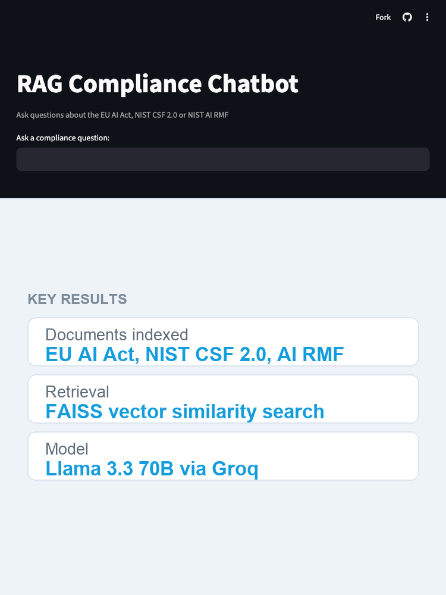
LiveFeatured Retrieval-augmented generation
RAG Compliance Chatbot
A retrieval-augmented generation chatbot that answers questions over long regulatory documents using LangChain, FAISS, embeddings and a Groq-hosted LLM.
Shivam Kumar
AWS Certified AI Practitioner
Machine learning, deep learning, natural language processing and computer vision, built with Python, TensorFlow and Keras and deployed as working applications.
An aspiring AI professional with a background in IT, cybersecurity and governance, risk and compliance.
An aspiring AI professional with a background in IT and cybersecurity, particularly governance, risk and compliance. Drawn to AI by the rapid growth of the industry and the increasing ways it is being applied across technology and business.
Junior AI / ML Developer — Birmingham, United Kingdom
Through a recent AI traineeship I built practical skills in Python, machine learning, deep learning with CNNs and RNNs, natural language processing and computer vision, using frameworks such as TensorFlow and Keras, alongside AWS AI fundamentals.
I see AI as an area to apply my cybersecurity and GRC experience while expanding my knowledge and developing a deeper understanding of emerging technologies.
A willingness to learn, a proactive approach and the ability to take ownership support my continued growth and positive contribution within the AI field.
The short version, for anyone hiring.
Junior AI / ML Developer, AI Engineer, Machine Learning Engineer — entry or junior level.
Machine learning, deep learning, natural language processing and computer vision.
Python, Transformers, FastAPI, Streamlit, Docker, TensorFlow/Keras, scikit-learn, LangChain, FAISS and cloud deployment.
Open to any industry, and interested in teams building real AI products.
Live applications deployed and publicly usable
Projects across NLP, LLMs, vision and classical ML
Public repositories on GitHub
Years in technology delivery, support and compliance
Four years across technology delivery, support and compliance, now focused on building and shipping AI and machine learning applications.
An aspiring AI professional with a background in IT and cybersecurity, particularly governance, risk and compliance. Drawn to AI by the rapid growth of the industry and the increasing ways it is being applied across technology and business.
IT Career Switch
Certification gained: AWS Certified AI Practitioner
3 A Levels, BTEC IT (merit) and GCSEs
Followed by self-directed AI and machine learning study alongside the IT Career Switch traineeship.
Peak Cyber Institute, Remote (United Kingdom)
LRQA Nettitude, United Kingdom
P&O Ferrymasters, United Kingdom
What I build with, in the order it matters for the work I am looking for.
 Python
Python
 Hugging Face
Hugging Face
 LangChain
LangChain
 scikit-learn
scikit-learn
 TensorFlow
TensorFlow
 PyTorch
PyTorch
 pandas
pandas
 NumPy
NumPy
 Jupyter
Jupyter
 FastAPI
FastAPI
 Docker
Docker
 GitHub Actions
GitHub Actions
 Git
Git
 GitHub
GitHub
 Linux
Linux
 AWS
AWS
 SQL / SQLite
SQL / SQLite
 VS Code
VS Code
Twelve AI and machine learning projects, from retrieval-augmented generation and transformer fine-tuning to classical ML and computer vision. Five are deployed and publicly usable.

LiveFeatured Retrieval-augmented generation
A retrieval-augmented generation chatbot that answers questions over long regulatory documents using LangChain, FAISS, embeddings and a Groq-hosted LLM.
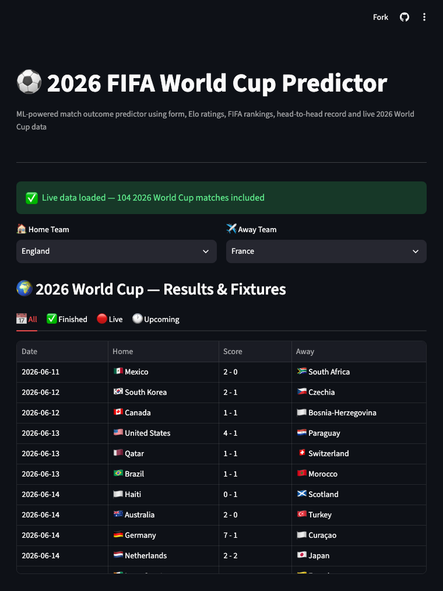
LiveFeatured Classical machine learning
A classical machine-learning application that predicts football match outcomes from team form, FIFA rankings, Elo ratings, head-to-head history, World Cup performance and match statistics.
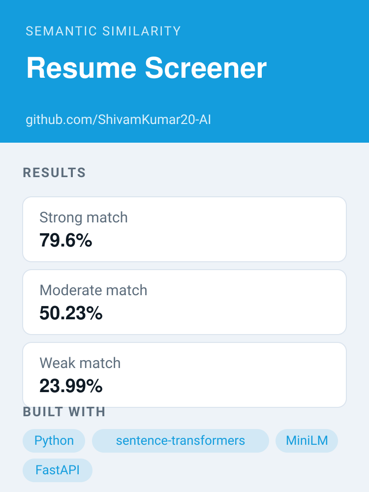
Featured Semantic similarity
A FastAPI service that scores how well a CV matches a job description using sentence-transformer embeddings and cosine similarity.
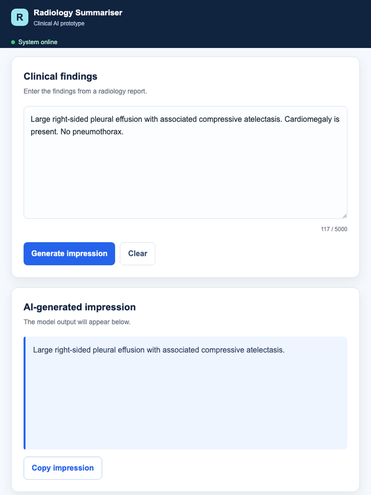
LiveFeatured Transformer NLP
A transformer-based NLP prototype that turns the free-text findings of a chest X-ray report into a concise impression, using a fine-tuned T5 model.
Technical demonstration only. Not a medical device and not a clinical decision-support tool.
Earlier and supporting work across NLP, computer vision, classical machine learning and AI governance.
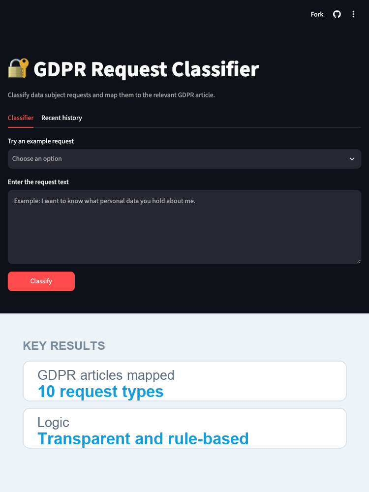
LiveApplied NLP for compliance
Triages incoming data-subject requests, maps each to the relevant GDPR article and recommends the next action.
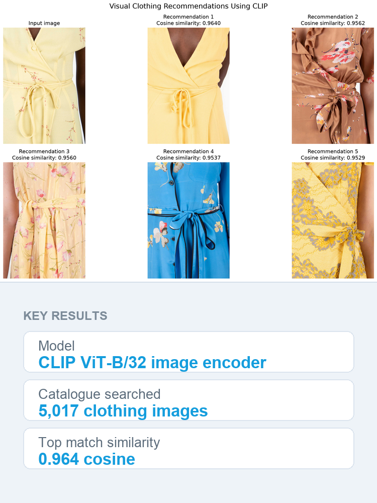
LiveComputer vision
Upload a photo of a garment and get the five most visually similar items from a retail catalogue, ranked by CLIP image similarity.
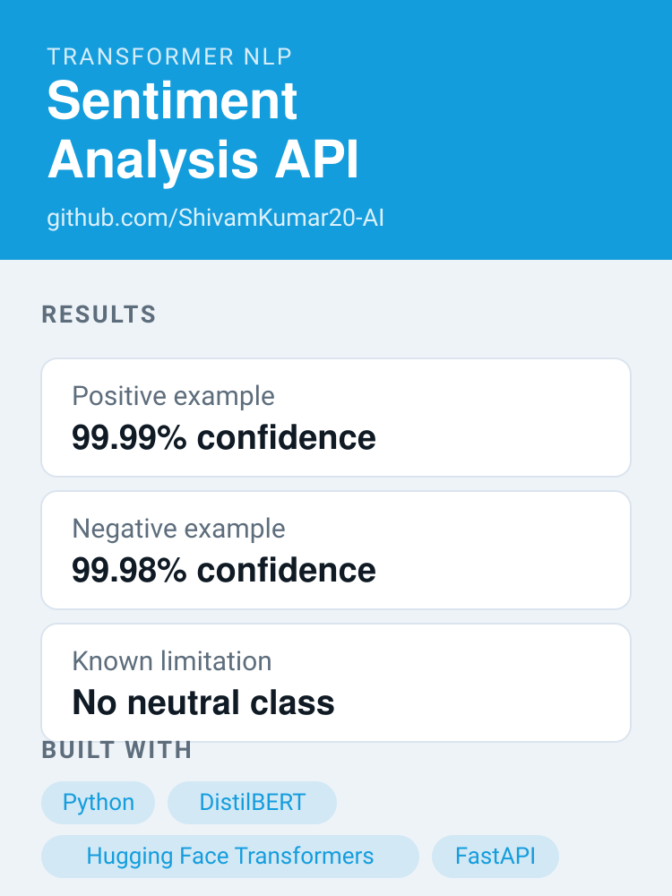
Transformer NLP
A production-style REST service that classifies text as positive or negative using a fine-tuned DistilBERT model.
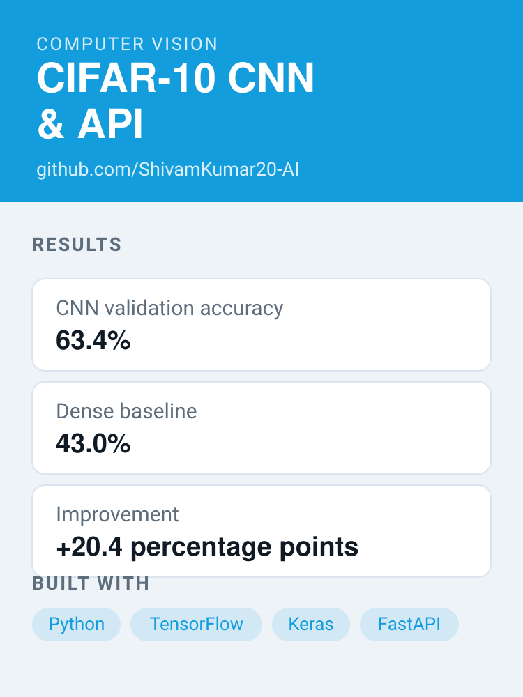
Computer vision
A convolutional neural network trained on CIFAR-10, benchmarked against a dense baseline and served through a REST API.
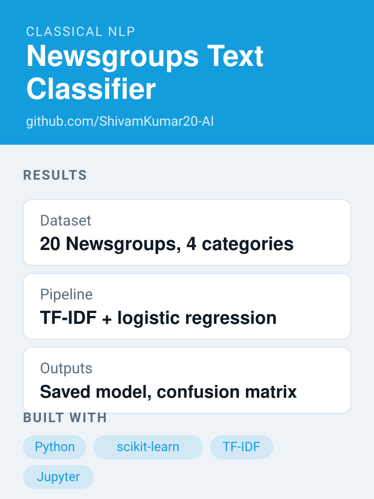
Classical NLP
Classifies newsgroup posts into topic categories with a TF-IDF and logistic regression pipeline.
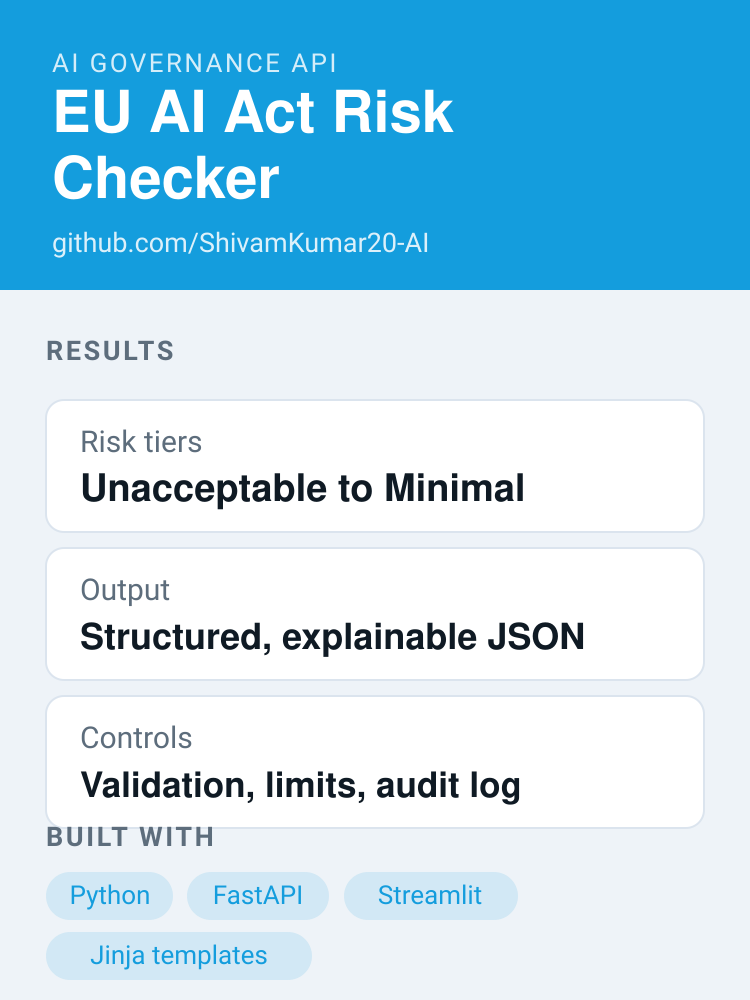
AI governance API
A REST API and web interface that screens an AI use case against the EU AI Act risk tiers and returns a structured, explainable verdict.
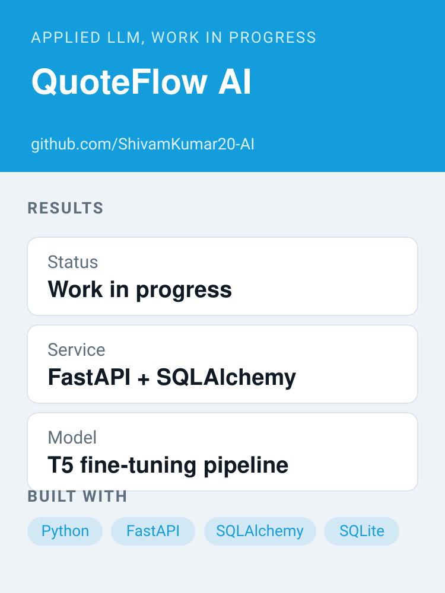
Applied LLM, work in progress
A quoting tool for UK building trades: a FastAPI service over a SQLAlchemy data model, with a T5 fine-tuning pipeline that learns from stored quotes.
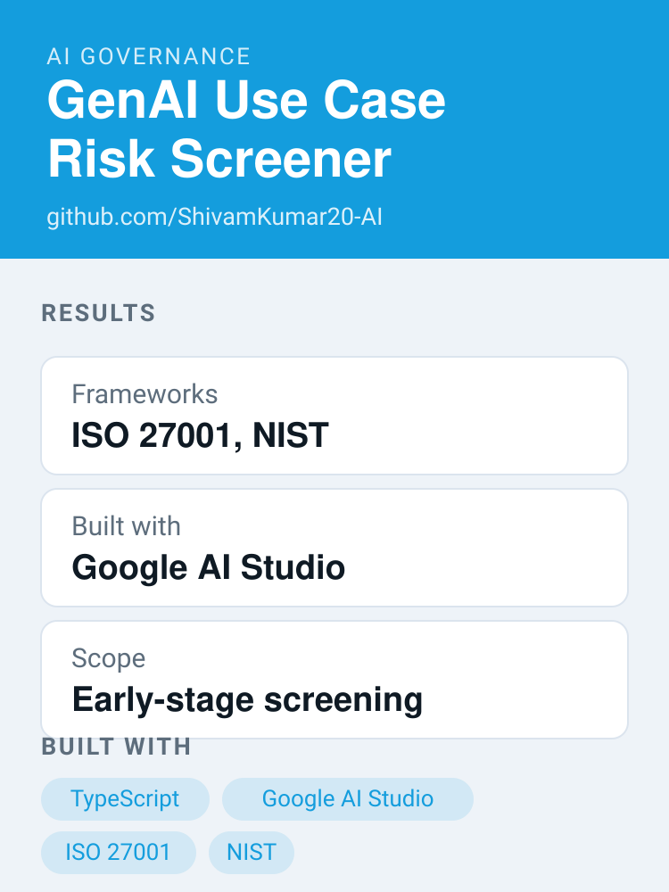
AI governance
A lightweight screener that maps a proposed GenAI feature to the governance and compliance controls it would need.
Live applications are hosted on Streamlit Community Cloud and may take a few seconds to wake from sleep.
Longer-form writing on applying AI to governance, risk and compliance work.
AI governance
A GDPR request classifier, and where it deliberately stops
When someone exercises their GDPR rights the clock starts immediately, and the hard part is rarely the law — it is reading a steady stream of messy, real-world messages fast enough to meet a one-month deadline. This piece walks through the triage tool I built for that first step: how it maps everyday wording to the right the request most plausibly engages, why it stops at a suggestion rather than a decision, and the safeguards — mandatory human sign-off, data minimisation, an audit log and a DPIA before any real scale — that keep the data protection officer accountable rather than the algorithm.
I am open to entry-level and junior AI / ML Developer, AI Engineer and Machine Learning Engineer opportunities. I am UK-based and open to remote, hybrid or on-site roles.
Get in touchOpen to junior AI/ML, applied NLP and responsible-AI engineering roles. The quickest way to reach me is on LinkedIn.
Birmingham, United Kingdom